The Assistant walks you through what is waiting: one card at a time, with a few buttons under it. There are eight buttons in all. Anything without a button still works when you ask for it in your own words, in the app or on your phone.
The buttons on each card#

| Button | Shown on | What it does | Runs |
|---|---|---|---|
| Next | every card | Marks it read and moves on. Open work you pass comes back after a few hours (Settings → Passed work comes back after) | at once |
| Mark done | a draft reply, a finished agent, a task | The one close: the task is done, an unsent draft is retired, a live agent is stopped, and it leaves your rail | at once |
| Send | a draft reply | Sends the draft, then Mark done | you confirm |
| Run it | an agent's proposal | Runs the action the agent proposed | you confirm |
| Reply | a person's ask, a finished agent with no draft | Writes a draft reply. Nothing is sent | at once |
| Make a task | an ask, an fyi, an idea | A task on your own list. No agent starts | you confirm |
| Send to agent | an ask, an fyi, an idea, a meeting, a report | A task and an agent on it. The card asks which agent | you confirm |
| Not ours | a draft reply, a proposal, an ask, an fyi | Files it. The card asks how far | you confirm |
| Save and end session | an agent waiting on you | Writes up what the session did and stops the agent. The task stays open | at once |
| Remind me | any card with an open task behind it | Asks for a day, then puts the task away until that morning: Upcoming in Tasks, off your rail. On the phone the days come as choices | you pick the day |
A handful of fyi comes as one card with its own All read, next button.
The two buttons that ask one question#

| Button | Answer | What happens |
|---|---|---|
| Not ours | Just this once | This message is filed. Its task is deleted if nothing was done on it, otherwise marked done |
| From now on | Triage learns to file everything from this sender. Their mail still arrives and stays readable | |
| A rule in Settings | An exclusion rule: their mail never reaches triage, and what already arrived leaves the Timeline. Reversible | |
| Send to agent | A coding agent | A task and a coding agent in a repository. The card asks which repository when it is not clear |
| A non-coding agent | A task and an agent for reading, checking, drafting or research |
Send to agent starts on the agent triage would pick; the other is one click away on the card.
Remind me#
Every open task has Remind me on its page: tomorrow, next week, in 2 weeks, in a month, or any day from the calendar. Until that day the task is under Upcoming in Tasks and off your work rail. That morning a note goes on the task and it is back on your rail, however long ago it arrived. Ask the Assistant the same thing — "bring TQ-0123 back in two weeks" — and it does it at once, with an undo.
Everything the task page can do#
Anything you can do on a task's page, you can ask the Assistant to do — about the task in front of you, or any task you name (TQ-0123). It shows you a card first, like every other action. It never guesses which task you mean.

| Say, about a task | What happens |
|---|---|
| "make this urgent", "rename it", "I'll take it" | Priority, title or owner changed |
| "this is a general job, not coding" | What kind of work it is changes, and a live session is closed if it no longer fits |
| "this belongs in the ledger repo" | The task moves to that repository |
| "tick off the first item" | That checklist box is ticked — the last box is Mark done |
| "add a note that Erin wants it by Friday" | A note on the task |
| "forward it to Erin" | A hand-off is written for your yes — nothing is sent until you approve it |
| "ask the sender which date range they need" | The question is written for your yes |
| "start the coding agent on TQ-0123" | An agent starts on that task; it asks which repository when it is not clear |
| "continue the agent where it left off" | The agent's own last session picks up again |
| "stop the agent on TQ-0123" | Save and end session on that task's agent |
| "split this in two" / "it's the same job as TQ-0120" | Two tasks, or this one folded into the other |
| "this isn't a task" | Deleted, and triage learns it was not work |
| "it's done" / "reopen TQ-0123" | Mark done, or open again |
| "bring it back in two weeks" | Remind me — away until that morning |
| "send it" / "reject that draft" / "make it shorter" | The draft is sent, rejected, or written again |
Words that work typed#
These have no button. Say them, in the app or on your phone.
| Say | What happens | Runs |
|---|---|---|
| "reply and tell them…" | A draft with that gist, for your yes | at once |
| "redraft it shorter" | The draft written again with the change | at once |
| "yes, go ahead" to a waiting agent | Your answer goes to the agent | you confirm |
| "run it again" on a report | The report runs again | at once |
| "remember that…" | A fact kept in Settings → Memory, used by triage and the Assistant | you confirm |
| "clear all the fyi" | Clears that set from the walk, with the count on the card | you confirm |
| "set up a report that…" | A walk-through for a report, connection or workflow | you confirm |
| "stop hiding auto-replies" | The setting is changed, with an undo | at once |
| "what's waiting on me?" | Looked up and answered — tasks, reports, mail, calendar, settings | at once |
Later and Tomorrow are gone: Next is the "not now", and Remind me puts a task away until a day.